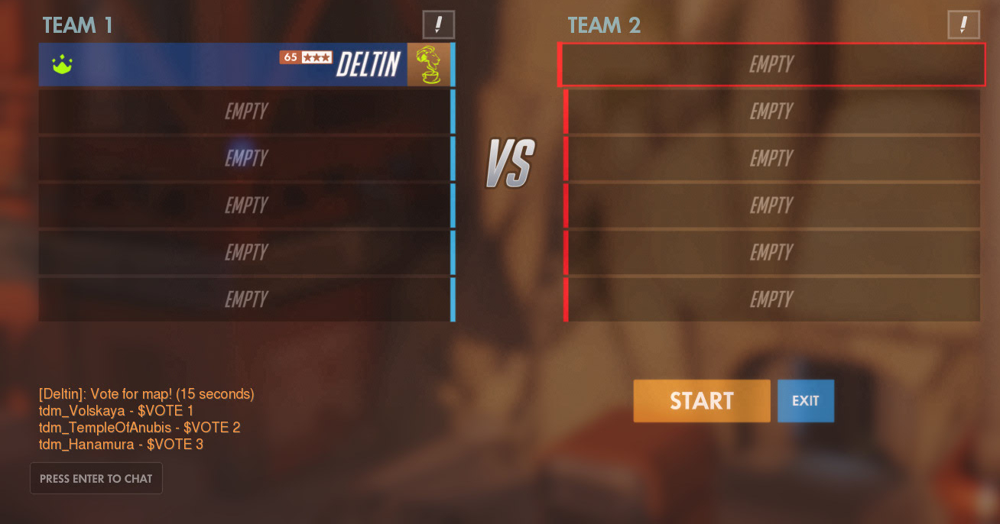

This will make 3 random maps that the players can vote for by typing "$VOTE 1", "$VOTE 2", or "$VOTE 3" into the chat.
First, lets set which modes are enabled and which maps can be selected.
using System; using System.Linq; using Deltin.CustomGameAutomation; namespace CustomgameBotLibrary_MapVoting { class Program { static void Main(string[] args) { CustomGame cg = new CustomGame(); // Modes that are enabled in the custom game. cg.ModesEnabled.TeamDeathmatch = true; // Set the current overwatch event cg.CurrentOverwatchEvent = cg.GetCurrentOverwatchEvent(); // Maps that can be selected. Map[] maps = new Map[] { Map.TDM_Dorado, Map.TDM_Eichenwalde, Map.TDM_Hanamura, Map.TDM_Hollywood, Map.TDM_HorizonLunarColony, Map.TDM_TempleOfAnubis, Map.TDM_VolskayaIndustries }; string[] mapNames = new string[] { "Dorado", "Eichenwalde", "Hanamura", "Hollywood", "Horizon", "TempleOfAnubis", "Volskaya" }; } } }
Then, choose 3 random maps from the maps array and store it in a new array.
using System; using System.Linq; using Deltin.CustomGameAutomation; namespace CustomgameBotLibrary_MapVoting { class Program { static void Main(string[] args) { CustomGame cg = new CustomGame(); // Modes that are enabled in the custom game. cg.ModesEnabled.TeamDeathmatch = true; // Set the current overwatch event cg.CurrentOverwatchEvent = cg.GetCurrentOverwatchEvent(); // Maps that can be selected. Map[] maps = new Map[] { Map.TDM_Dorado, Map.TDM_Eichenwalde, Map.TDM_Hanamura, Map.TDM_Hollywood, Map.TDM_HorizonLunarColony, Map.TDM_TempleOfAnubis, Map.TDM_VolskayaIndustries }; string[] mapNames = new string[] { "Dorado", "Eichenwalde", "Hanamura", "Hollywood", "Horizon", "TempleOfAnubis", "Volskaya" }; // Get maps Random rnd = new Random(); int[] votemap = new int[3]; // Index array of maps that can be voted for. // Choose random maps to be added to the votemap variable. for (int i = 0; i < votemap.Length; i++) { int choose; // Map index that is chosen. while (true) { // Make sure there are no duplicates when choosing the next map to be added to the votemap array choose = rnd.Next(maps.Length); if (votemap.Contains(choose)) continue; break; } votemap[i] = choose; } // We now have an array, votemap, with 3 random map indexes from the maps array. } } }
Now send a chat message showing the maps that can be voted for.
using System; using System.Linq; using Deltin.CustomGameAutomation; namespace CustomgameBotLibrary_MapVoting { class Program { static void Main(string[] args) { CustomGame cg = new CustomGame(); // Modes that are enabled in the custom game. cg.ModesEnabled.TeamDeathmatch = true; // Set the current overwatch event cg.CurrentOverwatchEvent = cg.GetCurrentOverwatchEvent(); // Maps that can be selected. Map[] maps = new Map[] { Map.TDM_Dorado, Map.TDM_Eichenwalde, Map.TDM_Hanamura, Map.TDM_Hollywood, Map.TDM_HorizonLunarColony, Map.TDM_TempleOfAnubis, Map.TDM_VolskayaIndustries }; string[] mapNames = new string[] { "Dorado", "Eichenwalde", "Hanamura", "Hollywood", "Horizon", "TempleOfAnubis", "Volskaya" }; // Get maps Random rnd = new Random(); int[] votemap = new int[3]; // Index array of maps that can be voted for. // Choose random maps to be added to the votemap variable. for (int i = 0; i < votemap.Length; i++) { int choose; // Map index that is chosen. while (true) { // Make sure there are no duplicates when choosing the next map to be added to the votemap array choose = rnd.Next(maps.Length); if (votemap.Contains(choose)) continue; break; } votemap[i] = choose; } // We now have an array, votemap, with 3 random map indexes from the maps array. // Send message to chat of what maps can be voted for. string type = "Vote for map! (15 seconds) " + mapNames[votemap[0]] + " - $VOTE 1 " + mapNames[votemap[1]] + " - $VOTE 2 " + mapNames[votemap[2]] + " - $VOTE 3"; cg.Chat.Chat(type); } } }
This will send a chat message like this:
To start listening to the $VOTE command, add the string "$VOTE" to the CustomGame.Commands.ListenTo variable, and set CustomGame.Commands.Listen to true.
using System; using System.Linq; using Deltin.CustomGameAutomation; namespace CustomgameBotLibrary_MapVoting { class Program { static void Main(string[] args) { CustomGame cg = new CustomGame(); // Modes that are enabled in the custom game. cg.ModesEnabled.TeamDeathmatch = true; // Set the current overwatch event cg.CurrentOverwatchEvent = cg.GetCurrentOverwatchEvent(); // Maps that can be selected. Map[] maps = new Map[] { Map.TDM_Dorado, Map.TDM_Eichenwalde, Map.TDM_Hanamura, Map.TDM_Hollywood, Map.TDM_HorizonLunarColony, Map.TDM_TempleOfAnubis, Map.TDM_VolskayaIndustries }; string[] mapNames = new string[] { "Dorado", "Eichenwalde", "Hanamura", "Hollywood", "Horizon", "TempleOfAnubis", "Volskaya" }; // Get maps Random rnd = new Random(); int[] votemap = new int[3]; // Index array of maps that can be voted for. // Choose random maps to be added to the votemap variable. for (int i = 0; i < votemap.Length; i++) { int choose; // Map index that is chosen. while (true) { // Make sure there are no duplicates when choosing the next map to be added to the votemap array choose = rnd.Next(maps.Length); if (votemap.Contains(choose)) continue; break; } votemap[i] = choose; } // We now have an array, votemap, with 3 random map indexes from the maps array. // Send message to chat of what maps can be voted for. string type = "Vote for map! (15 seconds) " + mapNames[votemap[0]] + " - $VOTE 1 " + mapNames[votemap[1]] + " - $VOTE 2 " + mapNames[votemap[2]] + " - $VOTE 3"; cg.Chat.Chat(type); // Now, start listening for the "$VOTE" command for 15 seconds. cg.Command.ListenTo.Add("$VOTE", true); // Listen to the "$VOTE" command cg.Command.SameExecutorCommandUpdate = true; // Allows players to change their vote for a map. cg.Command.Listen = true; // Start listening System.Threading.Thread.Sleep(15000); // Wait 15 seconds cg.Command.Listen = false; // Stop listening } } }
Finally, sort through the commands to get the map highest voted for.
using System; using System.Linq; using Deltin.CustomGameAutomation; namespace CustomgameBotLibrary_MapVoting { class Program { static void Main(string[] args) { CustomGame cg = new CustomGame(); // Modes that are enabled in the custom game. cg.ModesEnabled.TeamDeathmatch = true; // Set the current overwatch event cg.CurrentOverwatchEvent = cg.GetCurrentOverwatchEvent(); // Maps that can be selected. Map[] maps = new Map[] { Map.TDM_Dorado, Map.TDM_Eichenwalde, Map.TDM_Hanamura, Map.TDM_Hollywood, Map.TDM_HorizonLunarColony, Map.TDM_TempleOfAnubis, Map.TDM_VolskayaIndustries }; string[] mapNames = new string[] { "Dorado", "Eichenwalde", "Hanamura", "Hollywood", "Horizon", "TempleOfAnubis", "Volskaya" }; // Get maps Random rnd = new Random(); int[] votemap = new int[3]; // Index array of maps that can be voted for. // Choose random maps to be added to the votemap variable. for (int i = 0; i < votemap.Length; i++) { int choose; // Map index that is chosen. while (true) { // Make sure there are no duplicates when choosing the next map to be added to the votemap array choose = rnd.Next(maps.Length); if (votemap.Contains(choose)) continue; break; } votemap[i] = choose; } // We now have an array, votemap, with 3 random map indexes from the maps array. // Send message to chat of what maps can be voted for. string type = "Vote for map! (15 seconds) " + mapNames[votemap[0]] + " - $VOTE 1 " + mapNames[votemap[1]] + " - $VOTE 2 " + mapNames[votemap[2]] + " - $VOTE 3"; cg.Chat.Chat(type); // Now, start listening for the "$VOTE" command for 15 seconds. cg.Command.ListenTo.Add("$VOTE", true); // Listen to the "$VOTE" command cg.Command.SameExecutorCommandUpdate = true; // Allows players to change their vote for a map. cg.Command.Listen = true; // Start listening System.Threading.Thread.Sleep(15000); // Wait 15 seconds cg.Command.Listen = false; // Stop listening // Get results int[] results = new int[3]; // Array to store results in. foreach (CustomGame.Commands.CommandData command in cg.Command.ExecutedCommands) { string[] commandsplit = command.command.Split(' '); if (commandsplit[0] == "$VOTE") // Make sure the command executed is a vote command. { if (commandsplit.Length == 2) if (int.TryParse(commandsplit[1], out int votefor)) { // Add to result the map the player voted for votefor--; if (votefor >= 0 && votefor < 3) results[votefor]++; } } } string winningmapname = mapNames[votemap[results.ToList().IndexOf(results.Max())]]; // Gets the highest voted for map. Map winningmap = maps[votemap[results.ToList().IndexOf(results.Max())]]; // Gets the highest voted for map. cg.Command.RemoveAllExecutedCommands(); // Resets executed commands variable. cg.Chat.Chat(String.Format("{0}: {1} votes, {2}: {3} votes, {4}: {5} votes" , mapNames[votemap[0]], results[0], mapNames[votemap[1]], results[1], mapNames[votemap[2]], results[2])); // Write results to chat. cg.Chat.Chat("Next map: " + winningmapname); // Write name of next map to chat. cg.ToggleMap(ToggleAction.DisableAll, winningmap); // Set next map in custom games. Console.WriteLine("Done. Press enter to exit."); Console.ReadLine(); } } }